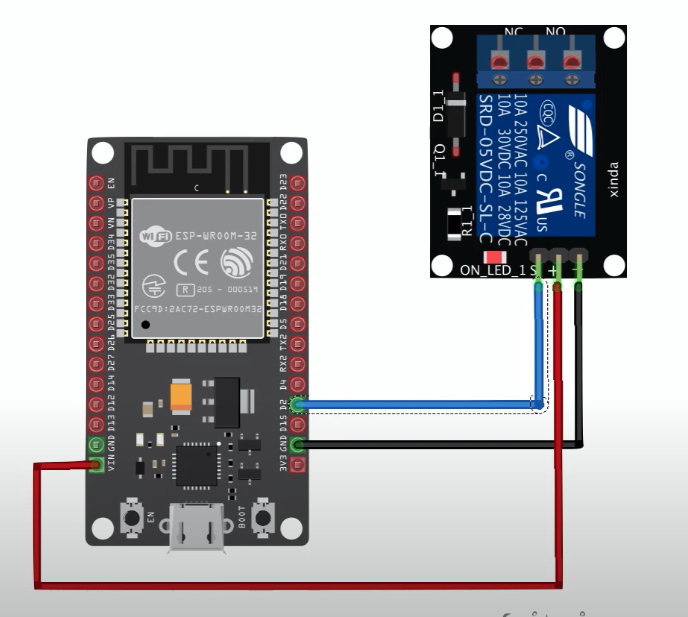
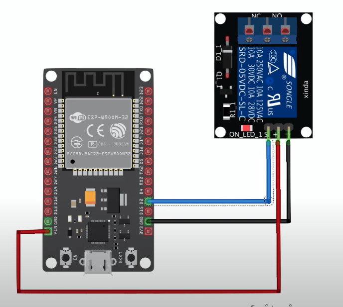
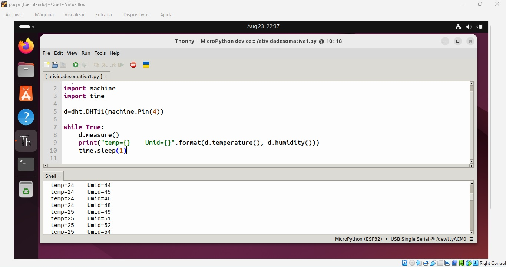
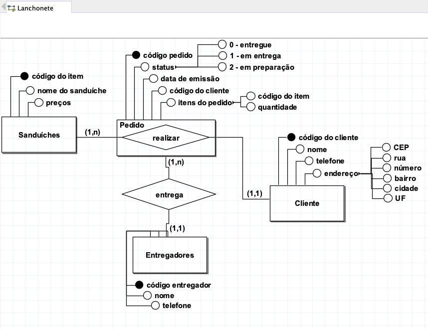
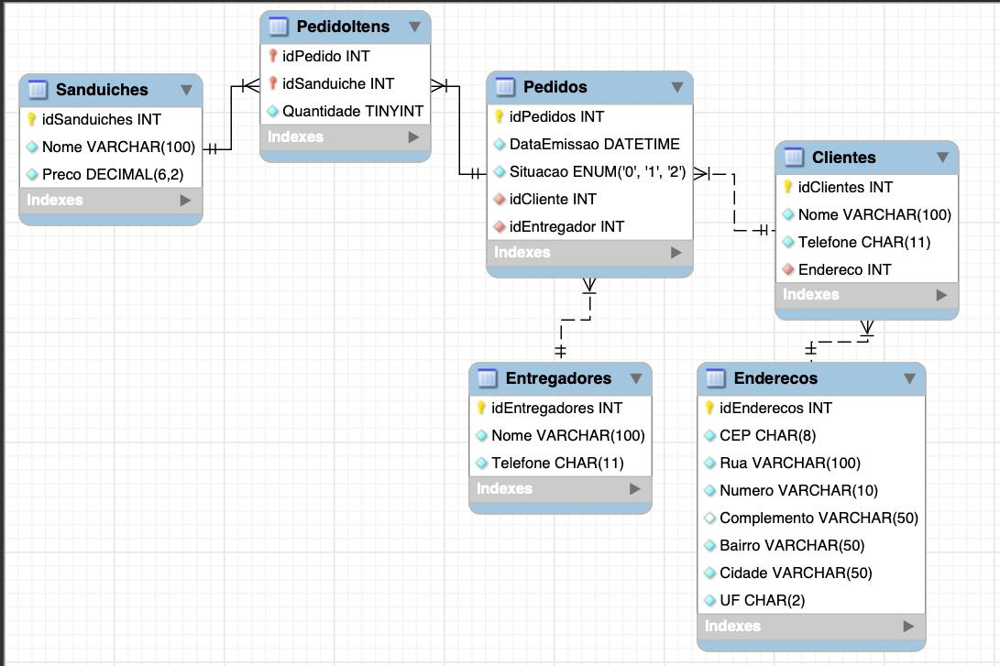

Projetos Técnicos
Confira a aplicação disponível em https://l-saul.github.io/colorconverter_saul/
Ferramenta online para converter cores HEX ↔ RGB de forma rápida, responsiva e intuitiva. Criada para facilitar o trabalho de desenvolvedores e designers, permitindo testes de cores diretamente no navegador com visualização instantânea do resultado.
A interface é simples, moderna (utilizando Tailwind CSS) e responsiva, oferecendo uma experiência amigável tanto no desktop quanto no mobile.
Funcionalidades:
- Conversão HEX → RGB:
Tecnologias Utilizadas:
- HTML5 - Estrutura do projeto.
- CSS3 (com Tailwind CSS) - Estilização e layout responsivo.
- JavaScript (Vanilla) - Lógica de conversão e manipulação do DOM.
Destaques Técnicos:
Validação de entrada HEX com regex
if (!/^#?[0-9A-Fa-f]{6}$/.test(hex)) {
output.textContent = "Invalid HEX code.";
output.style.backgroundColor = "transparent";
return;
}
Cálculo dinâmico de contraste para texto legível
output.style.backgroundColor = `rgb(${r}, ${g}, ${b})`;
output.style.color = (r*0.299 + g*0.587 + b*0.114) > 150 ? "black" : "white";
Conversão HEX → RGB usando parseInt e substring
let cleanHex = hex.replace('#', '');
let r = parseInt(cleanHex.substring(0, 2), 16);
let g = parseInt(cleanHex.substring(2, 4), 16);
let b = parseInt(cleanHex.substring(4, 6), 16);
Conversão RGB → HEX com toString(16) e padStart
const hex = "#" +
r.toString(16).padStart(2, '0') +
g.toString(16).padStart(2, '0') +
b.toString(16).padStart(2, '0');
Galeria:
Visão inicial da aplicação ao ser aberta.
Resultado após a inserção dos valores para conversão.
Por diretrizes institucionais, não é permitido divulgar integralmente os códigos dos projetos desenvolvidos sob orientação acadêmica.
Este projeto foi desenvolvido como parte de um trabalho acadêmico, com o objetivo de criar um sistema de linha de comando para gerenciamento de informações acadêmicas, utilizando Python e JSON como banco de dados local.
Funcionalidades:
- Cadastro, listagem, atualização e exclusão (CRUD) de:
Tecnologias Utilizadas:
- Python 3
- Módulo json para persistência de dados
- Estruturas de listas e dicionários
- Manipulação de arquivos e codificação UTF-8
- Boas práticas de tratamento de exceções
Destaques Técnicos:
Persistência de Dados em JSON
def ler_json():
with open(caminho_json, "r", encoding="utf-8") as f:
try:
dados = json.load(f)
except:
dados = {
"estudantes": [],
"disciplinas": [],
"professores": [],
"turmas": [],
"matriculas": []
}
return dados
def salvar_json():
with open(caminho_json, "w", encoding="utf-8") as f:
json.dump(dados, f, ensure_ascii=False)
Validação de Códigos para Evitar Duplicidade
def validacao_codigo(lista, codigo, chave):
return any(item[chave] == codigo for item in lista)
Menu Interativo e Dinâmico
def menu(titulo, escolha_menu):
if escolha_menu == "opcoes_principais":
opcoes = {
1: "Estudantes",
2: "Disciplinas",
3: "Professores",
4: "Turmas",
5: "Matrículas",
9: "Encerrar Chamado"
}
elif escolha_menu == "opcoes_secundarias":
opcoes = {
1: "Incluir",
2: "Listar",
3: "Atualizar",
4: "Excluir",
9: "Voltar",
}
print(f"--- {titulo} ---")
for opcao_cod, opcao_nome in opcoes.items():
print(f"({opcao_cod}) {opcao_nome}")
print("-" * (len(titulo) + 8))
try:
escolha_usuario = int(input("Digite o número correspondente à opção desejada: "))
if escolha_usuario in opcoes:
print(f"Opção selecionada: {opcoes[escolha_usuario]}")
return escolha_usuario
else:
print("Erro: Opção inválida! Digite um número existente no menu.")
except ValueError:
print("Erro: Opção inválida! Digite um número existente no menu.")
Exemplo de Inclusão com Validação e Tratamento de Erros
def incluir(categoria):
if categoria == 1:
while True:
try:
nome_estudantes = input("Digite o NOME: ")
cod_estudantes = int(input("Digite o CÓDIGO: "))
cpf_estudantes = input("Digite o CPF: ")
if validacao_codigo(estudantes, cod_estudantes, "CódigoEstudantes"):
print("Erro: Código já existente.")
continue
dicionario_estudantes = {"CódigoEstudantes": cod_estudantes, "NomeEstudantes": nome_estudantes, "CpfEstudantes": cpf_estudantes}
estudantes.append(dicionario_estudantes)
salvar_json()
print("Estudante cadastrado com sucesso!" )
except ValueError:
print("Erro: Código deve ser um número inteiro")
continue
break
Por diretrizes institucionais, não é permitido divulgar integralmente os códigos dos projetos desenvolvidos sob orientação acadêmica.
Projeto orientado a objetos desenvolvido em Java, com foco no cálculo de financiamentos para diferentes tipos de imóveis (Casa, Apartamento e Terreno), utilizando herança, polimorfismo e tratamento de exceções.
O projeto completo contém arquitetura modular com pacotes separados por função (modelo, util, main), mas, por restrições acadêmicas, apenas trechos selecionados estão sendo apresentados.
Funcionalidades:
- Cadastro e cálculo de financiamentos para diferentes tipos de imóveis
- Implementação de regras específicas para cada tipo de imóvel
- Persistência de dados com arquivos texto e serialização binária
- Interface de entrada de dados com validação e tratamento de erros
- Exceções personalizadas para regras de negócio
Tecnologias Utilizadas:
- Java 17
- Programação Orientada a Objetos (POO)
- Leitura e escrita em arquivos (FileReader, FileWriter, ObjectInputStream, ObjectOutputStream)
- Tratamento de exceções
- Polimorfismo e classes abstratas
Destaques Técnicos:
Arquitetura Modular
package modelo;
import util.AumentoMaiorDoQueJurosException;
public class Casa extends Financiamento{
private final double areaConstruida;
private final double tamanhoTerreno;
private final String nomeClasse = this.getClass().getSimpleName();
public Casa(double valorImovel, int prazoFinanciamento, double taxaJurosAnual, double areaConstruida, double tamanhoTerreno){
super(valorImovel, prazoFinanciamento, taxaJurosAnual);
this.areaConstruida = areaConstruida;
this.tamanhoTerreno = tamanhoTerreno;
}
(...)
}
Classe Abstrata com Polimorfismo
package modelo;
import java.io.Serializable;
public abstract class Financiamento implements Serializable{
protected final double valorImovel;
protected final int prazoFinanciamento;
protected final double taxaJurosAnual;
public Financiamento(double valorImovel, int prazoFinanciamento, double taxaJurosAnual){
this.valorImovel = valorImovel;
this.prazoFinanciamento = prazoFinanciamento;
this.taxaJurosAnual = taxaJurosAnual;
}
public double getValorImovel(){
return this.valorImovel;
}
public int getPrazoFinanciamento(){
return this.prazoFinanciamento;
}
public double getTaxaJurosAnual(){
return this.taxaJurosAnual;
}
public abstract double calcularPagamentoMensal();
public abstract double calcularTotalPagamento();
public abstract void dadosFinanciamento();
}
Regras de Negócio Específicas por Tipo de Imóvel
Terreno
@Override
public double calcularPagamentoMensal(){
double pagamentoMensal = (this.valorImovel / (this.prazoFinanciamento * 12)) * (1 + (this.taxaJurosAnual / 12));
return pagamentoMensal * 1.02;
}
Casa
@Override
public double calcularPagamentoMensal(){
double valorJurosMensal = ((this.taxaJurosAnual / 12) * this.valorImovel);
double valorSeguroMensal = 80;
try {
validarJuros(valorJurosMensal, valorSeguroMensal);
} catch (AumentoMaiorDoQueJurosException e) {
valorSeguroMensal = valorJurosMensal;
}
double pagamentoMensal = (this.valorImovel / (this.prazoFinanciamento * 12)) * (1 + (this.taxaJurosAnual / 12));
return pagamentoMensal + valorSeguroMensal;
}
Apartamento
@Override
public double calcularPagamentoMensal(){
double jurosMensal = taxaJurosAnual / 12;
int prazoMensal = prazoFinanciamento * 12;
double novaFormula = (valorImovel * jurosMensal * Math.pow((1 + jurosMensal), prazoMensal)) / (Math.pow((1 + jurosMensal), prazoMensal) - 1);
return novaFormula;
}
Exceções Personalizadas para Regras de Negócio
package util;
public class AumentoMaiorDoQueJurosException extends Exception {
public AumentoMaiorDoQueJurosException(String msg){
super(msg);
}
}
Persistência de Dados com Arquivos Texto e Serialização
.txt
//escrita
try (FileWriter escritor = new FileWriter("dados.txt")) {
escritor.write(novoFinanciamento1.toString() + "\n");
escritor.write(novoFinanciamento2.toString() + "\n");
escritor.write(novoFinanciamento3.toString() + "\n");
escritor.write(novoFinanciamento4.toString() + "\n");
escritor.write(novoFinanciamento5.toString() + "\n");
} catch (IOException e){
System.out.println("Erro ao escrever no arquivo: " + e.getMessage());
}
//leitura
try (FileReader leitorArquivos = new FileReader("dados.txt");
BufferedReader leitor = new BufferedReader(leitorArquivos)){
String linha;
while ((linha = leitor.readLine()) != null) {
System.out.println(linha); // ou processa a linha
}
} catch (IOException e){
System.out.println("Erro ao acessar o arquivo: " + e.getMessage());
}
Serializable
//object output stream
try (ObjectOutputStream outputStream = new ObjectOutputStream(new FileOutputStream("financiamentos.test"))){
outputStream.writeObject(listaFinanciamentos);
System.out.println("Lista salva com sucesso.");
} catch (IOException e){
e.printStackTrace();
}
//object input stream
ArrayList listaLida = null;
try (ObjectInputStream inputStream = new ObjectInputStream(new FileInputStream("financiamentos.test"))){
listaLida = (ArrayList) inputStream.readObject();
System.out.println("Lista lida com sucesso.");
if (listaLida != null) {
for (Financiamento f : listaLida) {
System.out.println(f.toString());
}
}
} catch (IOException | ClassNotFoundException e){
e.printStackTrace();
}
Por diretrizes institucionais, não é permitido divulgar integralmente os códigos dos projetos desenvolvidos sob orientação acadêmica.
Este projeto foi desenvolvido como parte de uma atividade acadêmica, com o objetivo de configurar, programar e validar um sistema baseado no microcontrolador ESP32, utilizando o sensor DHT11 para coleta de dados e um relé para acionamento automatizado, com envio das informações para a plataforma ThingSpeak.
Funcionalidades:
- Coleta de Dados Ambientais, com o ESP32 é possível realizar leituras periódicas do sensor DHT11, obtendo valores de temperatura e umidade relativa do ar.
- Os dados coletados são avaliados em tempo real pelo microcontrolador. Com base em condições pré-definidas, como se temperatura > 31 °C ou umidade > 70%, o relé é acionado automaticamente
- O ESP32 transmite os dados coletados para a plataforma ThingSpeak, possibilitando o armazenamento, visualização e análise em tempo real por meio de dashboards.
- O sistema combina sensores, atuadores e comunicação sem fio em um único ambiente, servindo como protótipo para aplicações de automação residencial, monitoramento climático e controle inteligente de dispositivos.
Tecnologias Utilizadas:
- Máquina Virtual em Linux - ambiente de desenvolvimento
- Thonny IDE - programação e configuração do ESP32
- ESP32 - Microcontrolador
- MicroPython - execução no ESP32
- Sensor DHT11 - coleta de temperatura e umidade
- Relé - acionamento automático
- ThingSpeak - armazenamento e visualização dos dados coletados
Destaques Técnicos:
Persistência e Envio de Dados
ESP32 configurado em Python e o envio de dados coletados para a API do ThingSpeak.
Funcionamento básico do microcontrolador
import dht
import machine
import time
d=dht.DHT(machine.Pin(4))
while True:
d.measure()
print("Temp={} Umid{}".format(d.temperature(), d.humidity()))
time sleep(5)
Validação de Condições para o Relé
if temperatura > 31 or umidade > 70:
rele.on()
else:
rele.off()
Galeria:
Conexão do microcontrolador com o DHT11:
 

Maquina virtual em Linux com o funcionamento da Thonny IDE:

Primeira versão do funcionamento do sistema, nota que a elevação de humidade e temperatura e dada ao segurar o DHT11 com a mão:
Por diretrizes institucionais, não é permitido divulgar integralmente os códigos dos projetos desenvolvidos sob orientação acadêmica.
Este projeto foi desenvolvido como parte de uma atividade acadêmica, com o objetivo de consolidar conhecimentos em modelagem de banco de dados relacional, abrangendo desde a construção dos modelos conceitual, lógico e físico, até a inserção de dados e consultas SQL com integridade referencial.
Funcionalidades:
- O sistema permite o cadastro estruturado de clientes, endereços, sanduíches e entregadores, garantindo organização e integridade das informações. Ele realiza a gestão completa dos pedidos, registrando data de emissão, status (em preparação, em entrega ou entregue) e associando cada pedido ao cliente correspondente. Cada pedido pode conter múltiplos itens do cardápio, com suas quantidades registradas de forma detalhada. O sistema também permite a atribuição de entregadores aos pedidos em andamento e oferece consultas para monitorar os pedidos em preparação, proporcionando controle completo sobre o ciclo de atendimento e entrega.
- O sistema de gestão de vinhos permite cadastrar de forma organizada as informações sobre vinhos, vinícolas e regiões. Cada vinho possui nome, tipo, ano de produção e descrição, estando associado a uma vinícola específica. As vinícolas, por sua vez, possuem cadastro completo com nome, descrição, telefone, email e vínculo a uma região determinada, que também mantém nome e descrição. Essa estrutura garante integridade referencial e permite consultas que relacionam vinhos, vinícolas e regiões, possibilitando análises completas sobre o produto e sua origem. Além disso, o sistema permite o controle de acessos por usuários com permissões restritas, garantindo segurança e limitação de consultas quando necessário, como no caso do usuário Somellier.
Tecnologias Utilizadas:
- BrModelo - Modelagem Conceitual
- MySQL Workbench - Modelagem Lógica
- MySQL - Modelagem Física e Implementação do Banco
- SQL - Criação de tabelas, inserções e consultas
Destaques Técnicos:
Criação das tabelas
-- Tabela de Entregadores
CREATE TABLE mydb.Entregadores (
idEntregadores INT AUTO_INCREMENT,
Nome VARCHAR(100) NOT NULL,
Telefone CHAR(11) NOT NULL,
PRIMARY KEY(idEntregadores)
);
-- Tabela de Enderecos dos clientes
CREATE TABLE mydb.Enderecos (
idEnderecos INT AUTO_INCREMENT,
CEP CHAR(8) UNIQUE NOT NULL,
Rua VARCHAR(100) NOT NULL,
Numero VARCHAR(10) NOT NULL,
Complemento VARCHAR(50),
Bairro VARCHAR(50) NOT NULL,
Cidade VARCHAR(50) NOT NULL,
UF CHAR(2) NOT NULL,
PRIMARY KEY(idEnderecos)
);
-- Tabela de Clientes
CREATE TABLE mydb.Clientes (
idClientes INT AUTO_INCREMENT,
Nome VARCHAR(100) NOT NULL,
Telefone CHAR(11) NOT NULL,
idEndereco INT NOT NULL,
PRIMARY KEY (idClientes),
FOREIGN KEY (idEndereco) REFERENCES mydb.Enderecos(idEnderecos)
);
-- Tabela de Pedidos
CREATE TABLE mydb.Pedidos (
idPedidos INT AUTO_INCREMENT,
DataEmissao DATETIME NOT NULL,
Situacao ENUM('0', '1', '2') NOT NULL,
idCliente INT NOT NULL,
idEntregador INT,
PRIMARY KEY (idPedidos),
FOREIGN KEY (idCliente) REFERENCES mydb.Clientes(idClientes),
FOREIGN KEY (idEntregador) REFERENCES mydb.Entregadores(idEntregadores)
);
-- Tabela de Sanduiches
CREATE TABLE mydb.Sanduiches (
idSanduiches INT AUTO_INCREMENT,
Nome VARCHAR(100) NOT NULL,
Preco DECIMAL(5,2) UNSIGNED NOT NULL,
PRIMARY KEY(idSanduiches)
);
-- Tabela dos Itens que compoem o pedido
CREATE TABLE mydb.PedidoItens (
idPedido INT,
idSanduiche INT,
Quantidade TINYINT UNSIGNED NOT NULL,
PRIMARY KEY(idPedido, idSanduiche),
FOREIGN KEY (idPedido) REFERENCES mydb.Pedidos(idPedidos),
FOREIGN KEY (idSanduiche) REFERENCES mydb.Sanduiches(idSanduiches)
);
Inserção de dados (resumido)
INSERT INTO mydb.Entregadores (Nome, Telefone) VALUES
('Jose Aldo', '41909878656'),
('Carlos Macedo', '41998877665');
INSERT INTO mydb.Enderecos (CEP, Rua, Numero, Complemento, Bairro, Cidade, UF) VALUES
('80010000', 'Rua das Flores', 101, 'Apto 201', 'Centro', 'Curitiba', 'PR'),
('80210020', 'Avenida Brasil', 456, 'Sala 12', 'Batel', 'Curitiba', 'PR'),
('80730050', 'Travessa da Paz', 789, NULL, 'Portão', 'Curitiba', 'PR');
INSERT INTO mydb.Clientes (Nome, Telefone, idEndereco) VALUES
('Teobaldo Aguiar', '41762378965','2'),
('Cristiana Silva', '41975003240','3'),
('Marcelino Costa Curta','41983465832','1');
INSERT INTO mydb.Pedidos (DataEmissao, Situacao, idCliente, idEntregador) VALUES
('2025-08-15 10:00:00', '2', 1, 1),
('2025-08-16 11:15:00', '2', 1, 2),
('2025-08-17 12:30:00', '2', 3, 1),
('2025-08-18 13:45:00', '0', 1, NULL),
('2025-08-18 14:50:00', '0', 3, NULL),
('2025-08-18 15:20:00', '0', 2, NULL);
INSERT INTO mydb.Sanduiches (Nome, Preco) VALUES
('Sanduíche de carne assada', 9.99),
('Sanduíche de atum', 14.90),
('Wrap vegetariano com homus', 14.90),
('Sanduíche de salada de frango', 24.90);
INSERT INTO mydb.PedidoItens VALUES
(1, 1, 2),
(1, 2, 1),
(2, 3, 1),
(2, 4, 2),
(3, 1, 1),
(3, 3, 1),
(4, 2, 2),
(4, 4, 1),
(5, 1, 1),
(6, 3, 2);
Atualização dos dados
UPDATE mydb.Pedidos SET Situacao = '1', idEntregador = 1 WHERE idPedidos = 4;
Seleção e filtragem dos dados com INNER JOIN
SELECT x.*, y.idSanduiche, y.Quantidade FROM mydb.Pedidos x INNER JOIN mydb.PedidoItens y ON x.idPedidos = y.idPedido WHERE Situacao = '0';
Galeria:
Modelagem Conceitual da Lanchonete:
Modelagem Lógica da Lanchonete:
Documentação em atualização
Funcionalidades:
- Cadastro de usuários
- Lançamento e categorização de receitas e despesas
- Persistência de dados em MySQL
- Painel de controle com visão geral do saldo e fluxo de caixa
- Geração de gráficos e relatórios financeiros interativos
- Interface simplificada, responsiva e com UX moderna
Tecnologias Utilizadas:
- HTML 5
- React.js
- Tailwind.css
- MySQL
- JavaScript
- Next.js